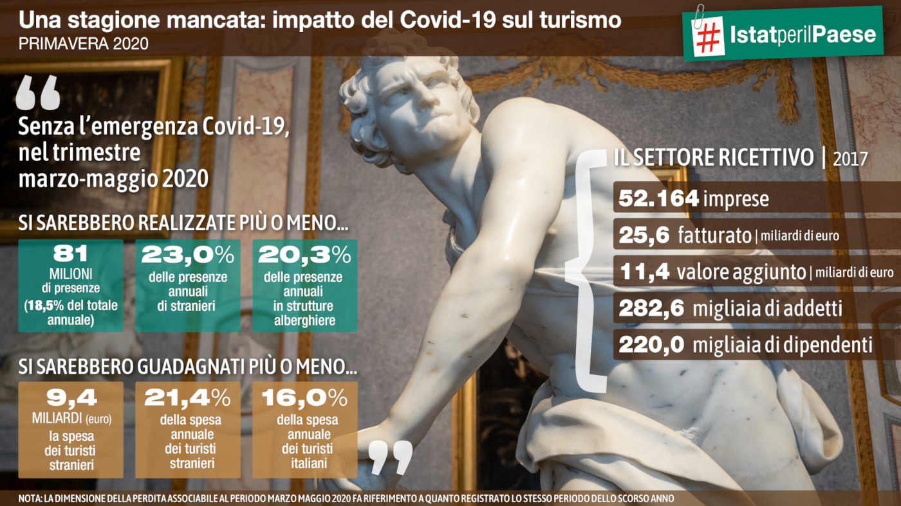
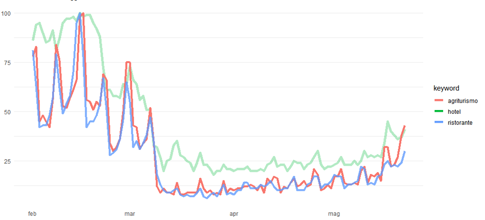
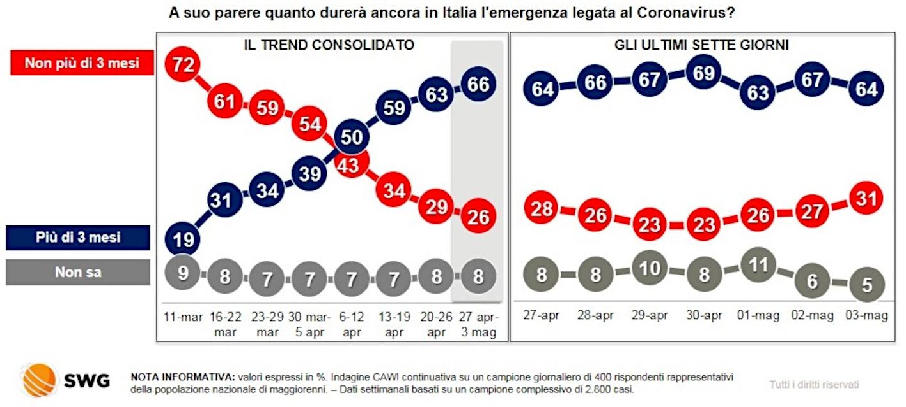

Capitolo 3 “Turista presso me stesso”. Conversazione con Gianluigi Tiddia
Gianluigi Tiddia e Agnese Vardanega
Gianluigi Tiddia (aka @insopportabile), ingegnere civile ed artigiano digitale
3.1 La paura e l’incertezza
Come gli altri incontri di questo ciclo di seminari, anche quello con Gianluigi Tiddia è stato preceduto da una lunga telefonata, in cui si è parlato a ruota libera dei temi che la rapida evoluzione dei fatti inerenti al Covid stava ponendo alla nostra attenzione. Certo, la domanda di fondo era: “Come andrà questa stagione turistica?”; ma anche “Sarà la volta buona in cui si metterà veramente mano a questo settore?”.
La tendenza prevalente era a salvare il salvabile, agendo sulla rassicurazione dei turisti. In un primo momento, era prevalso il paradigma del “contrasto al terrorismo psicologico”. A primavera inoltrata, quando si è capito che in un modo o nell’altro si sarebbe aperto qualcosa o tutto, aveva iniziato a prendere piede quello della “sanificazione”, dal plexiglas fra gli ombrelloni al disinfettante in spiaggia (e quindi in mare!).
Prima dell’incontro, siamo andati a guardare i dati. Questa che segue è l’infografica dell’Istat (2020), che presenta le proiezioni di quelle che avrebbero potuto essere le presenze turistiche e i relativi guadagni, fra marzo e maggio 2020, se non ci fosse stato il virus.

Figura 1. Infografica Istat, maggio 2020
I dati sono impressionanti: 81 milioni di presenze mancate fra marzo e maggio, che non c’erano state e che probabilmente non ci sarebbero state più in nessun caso, visto che al momento in cui parlavamo eravamo già al 12 maggio.
Siamo anche andati a guardare i sondaggi che tanto avevano fatto discutere nelle settimane precedenti5.
Alla fine di febbraio, un’indagine commissionata da Confturismo-Confcommercio a SWG aveva mostrato come tanti italiani stessero riprogrammando le loro vacanze, nella direzione di una maggiore cautela. Il presidente, Luca Patanè, aveva in quella occasione parlato di «psicosi collettiva generata anche da una comunicazione spesso allarmistica e fuorviante, oltre che dai provvedimenti restrittivi introdotti»6. Come se gli italiani fossero influenzati dalla pandemia in quanto mediata, e non dalla circolazione del virus in sé.
Interpretazione a mio avviso smentita dal fatto che, già fra il 29 e il 31 gennaio, il 62% degli italiani era molto o abbastanza preoccupato per il virus “cinese” (indagine SWG, fonte: Ansa7). E anche dal fatto che fino al 16 marzo (ovvero fino all’inizio del lockdown), gli italiani non avevano rinunciato del tutto al ristorante o ai week-end in agriturismo, come si può vedere dai volumi delle ricerche effettuate su Google in Figura 2 (elaborazione personale su dati di Google Trends).

Figura 2. Le ricerche su Google dei termini “hotel”, “agriturismo”, “ristorante”
Nonostante ciò, fra marzo e aprile, quelli che dichiaravano di voler posticipare i viaggi erano addirittura aumentati. Il “pessimismo” aveva preso piede con l’evoluzione della pandemia, come si vede dai dati SWG in Figura 3, che ci avevano molto colpito.

Figura 3. Fonte: Osservatorio SWG (consultato l’11 maggio)
3.2 I viaggi avventura
NB. Di qui in avanti, i miei interventi sono riportati in corsivo, le domande del pubblico sono identificate dai nomi, mentre il testo normale riporta l’intervento di Gianluigi Tiddia.
— La sensazione che si ha, insomma, è che gli italiani, in realtà, abbiano ben compreso che questa è una crisi che non durerà poche settimane. Il problema non è dunque la “paura” irrazionale (e magari instillata dai media), quanto piuttosto una razionalissima risposta di massima cautela ad una situazione di “incertezza”: sulle pratiche sicure, non meno che sulle prospettive economiche.
Questo è avvalorato dalla quotidianità della mancanza di certezza, di informazione, di referenti e soprattutto di referenti unici per quei processi che dovrebbero rassicurare. Ogni giorno salta fuori una notizia nuova che fa cadere tutte le congetture ipotizzate nei giorni precedenti. Prendiamo ad esempio quella di oggi8, le indicazioni da parte dell’INAIL sulle misure da attuare nelle spiagge e nei litorali: il distanziamento degli ombrelloni, i corridoi sicuri per entrare in spiaggia, la sanificazione degli ambienti comuni, il divieto di assembramento anche per i bambini ecc. Fino a ieri si parlava di plexiglas9.
Quanto siamo disposti a fare una vacanza completamente diversa da quella che è nella nostra percezione la vacanza, ovvero svago, rilassamento, socializzazione? Una vacanza con la spada di Damocle di questo maledetto virus che si può annidare in qualunque luogo?
La parola “incertezza” rappresenta bene il quadro: non solo l’incertezza relativa alle date, ma anche e soprattutto quella legata al processo di scelta. Vale la pena fare una vacanza così?
E poi c’è anche l’incertezza economica, che non è affatto secondaria, al di là delle ipotesi sugli incentivi alle vacanze (che, per le cifre che si leggono, sono abbastanza risibili). È chiaro che una persona che pure si può permettere una vacanza, in questo momento ci pensa su due volte prima di rinunciare a quel polmone di sicurezza che lo potrà sostenere quando questa crisi presenterà il conto. Perché, parliamoci chiaro: di questa crisi economica vedremo gli effetti in autunno, non adesso. Adesso siamo solo all’inizio.
In questi giorni si inizia a parlare di riaperture: degli aeroporti, delle spiagge, dei ristoranti. Però in che condizioni e come? La vacanza presuppone prima un trasferimento: una persona che da un punto si deve spostare in un altro punto, con mezzi di trasporto che ora sono percepiti come “pericolo”. Nel sondaggio dell’IPSOS (Tabella 1), si nota che il rischio percepito sui mezzi di trasporto è tre volte quello percepito nei supermercati (il secondo in classifica): si tratta di un disagio e di una preoccupazione molto forte, che riguarda naturalmente anche l’andare in vacanza.
| sul posto di lavoro | 6% |
| su un mezzo di trasporto pubblico (autobus, metropolitana, treno) | 57% |
| nei piccoli negozi | 9% |
| al supermercato | 19% |
| per strada | 1% |
| nei parchi | 2% |
| (non sa, non indica) | 6% |
| TOTALE | 100% |
Insomma, mentre prima le destinazioni insicure, dove c’erano guerre e emergenze sanitarie, erano quelle più lontane ed “esotiche”, adesso siamo tutti in questa situazione. Di fatto, tutti ci dobbiamo abituare a fare un viaggio avventura, anche verso le mete più vicine ed abituali.
La questione dei trasporti crea in generale una grandissima preoccupazione, anche come settore economico. I vettori aerei o riaprono o falliscono, non ci sono alternative. E se aprono devono aprire con dei carichi oltre il 70% altrimenti molti vettori non rientrano nell’utile di impresa (Ryan Air viaggia oltre il 98%). Si tratta di un settore economico che o riapre come era prima o non ci sarà più10. Si stanno considerando quindi diverse ipotesi sulle misure da adottare per ripartire in sicurezza. Ma, tornando al discorso dell’incertezza, chi ci dice che queste misure saranno effettivamente efficaci? In questo momento, dovrebbe essere prima di tutto l’OMS a rispondere a questa domanda. Però di fatto nessuno sa ancora di preciso come si muove questo virus.
— E per la Sardegna quello del trasporto aereo è un grosso problema, essendo il principale collegamento che l’isola ha con l’Italia
In Sardegna ci arrivi per via aerea o navale, oppure non ci arrivi. Questo è sempre stato un grande problema. In questo periodo, però, dobbiamo vedere questa particolarità anche come una opportunità. Il fatto di poter verificare in maniera puntuale e controllata gli accessi permette infatti di avere un controllo maggiore sui flussi, e quindi anche sui rischi di diffusione del contagio11.
3.3 Ripensare l’adesso e il dopo
— La Fase 2 sarebbe in realtà una fase di transizione: stiamo aspettando di vedere che succede, se si possa uscire oppure no …
La Fase 2 dal punto di vista politico è un po’ un test su di noi. Ci sono però alcuni elementi che possono essere oggetto di ragionamento da subito: a livello di strategia, di competenza, e anche di azione.
Le alternative in questa situazione sono due. Aspettare di avere indicazioni precise da parte degli enti preposti per poi prendere delle decisioni, che è la strategia della gran parte del mondo del turismo in questo momento (a parte insultare chiunque non li faccia aprire e chiunque non li sostenga, sia pure per motivi comprensibili). Oppure, provare a capire in quali modalità riprendere le attività.
Fondamentale sarà anche comprendere che, comunque si risolva questa situazione, passeranno un paio d’anni prima di tornare a quella che noi indicavamo come “normalità”: ovvero un’esperienza di viaggio serena, in cui puoi dare una pacca sulla spalla o la mano al ristoratore, o puoi stare in mezzo a una folla, a un concerto o in spiaggia, senza problemi. L’alternativa mi sembra dunque abbastanza obbligata: dobbiamo prenderne atto e provare ad immaginare quello che le persone potrebbero cercare e desiderare in questa situazione diversa.
— Ti interrompo un attimo sul punto della progettazione. Io ho l’impressione però che la politica in parte risponda alle richieste degli operatori. E gli operatori vogliono tornare alla normalità di prima, ma adesso.
Esattamente. La politica invece deve fare la politica, che non è fare i sondaggi e proporre azioni sulla base del sentire comune. È chiaro che la politica deve ascoltare, è una parte importante del processo politico, ma poi deve decidere per il meglio di tutti. E invece se la dimenticano, questa seconda parte. In questo momento la politica sbaglia nel provare a riaprire e ad ipotizzare di ritornare alla normalità in tempi brevi: perché non sarà possibile, noi stessi siamo cambiati nella percezione della nostra normalità, anche noi ragioniamo in una maniera diversa. Non affronteremo una vacanza nella stessa maniera, e non sarà un’esperienza gratificante, se non immaginandola in una maniera completamente diversa.
Dobbiamo cambiare il nostro approccio, e la politica dovrebbe indicare queste nuove traiettorie, invece che indicare la strada vecchia e dire: “State tranquilli, tanto un anno più o meno vi sosteniamo noi”.
— E chi è che dovrebbe ripensare queste nuove traiettorie?
Secondo me le traiettorie devono essere disegnate e suggerite dalla politica con coraggio, e anche gli strumenti. Altrimenti, è difficile convincere il capostipite albergatore degli anni Sessanta a cambiare modello anche se ci sono i figli e nipoti a gestirlo. Sappiamo quanto le tradizioni di famiglia, specialmente nell’accoglienza, siano consolidate. Servono incentivi a questo salto generazionale e all’ammodernamento, anche dal punto di vista della mentalità. E deve essere un approccio nazionale altrimenti non se ne esce.
— Nazionale dal punto di vista dell’input. Poi ogni territorio ha una storia sua e quindi bisogna immaginare il prodotto in funzione del territorio e delle comunità
Nel momento in cui esistono i fondi ed esiste la strategia, il territorio dovrebbe decidere la pianificazione turistica. Ma è un qualcosa che riguarda la politica regionale. La Turchia ha fatto diciassette campi da golf, investendo 150 milioni di euro in dieci anni, e si è ritagliata una quota del turismo golfistico nel Mediterraneo. Stiamo parlando di processi di lungo periodo, che richiedono una visione e investimenti di tipo nazionale.
— Non sono anche gli operatori che devono immaginare il prodotto e gli strumenti?
Molti operatori di oggi nascono da un turismo consolidato, che, soprattutto negli anni Sessanta e Settanta, era fatto di stranieri, ma anche e soprattutto di famiglie, che facevano lunghe vacanze solitamente nello stesso luogo, ed avevano una discreta disponibilità economica. Le mete vicine erano quelle più accessibili per la classe media, mentre adesso possiamo decidere di andare in Sardegna o alle Maldive praticamente allo stesso costo.
Il mondo del turismo è cambiato negli ultimi 15 anni, con l’avvento di piattaforme come Booking, ma anche con il low-cost, elementi che hanno rotto i vecchi sistemi. Abbiamo poi un turismo diverso, molto più breve e molto più diffuso durante tutto l’anno.
Gli operatori però sono rimasti a una mentalità e a un approccio al turismo molto old style. Non basta aprirsi una pagina internet o avere un account su Booking per mettersi al passo. Dobbiamo riuscire a far percepire questa differenza culturale enorme. Ad esempio oggi il turista può scegliere l’albergo controllando anche su Google Street View per capire se sta in una strada decente e se ci sono bei negozi. A me è successo di cambiare albergo su suggerimento di Street View perché a Barcellona avevo preso un albergo su una stradaccia.
Il turismo sta cambiando anche per le nuove generazioni che scelgono una struttura in base a criteri diversi rispetto ai nostri: se per noi era il caffè buono, per un giovane adesso è il WiFi. La doccia può anche essere mezza distrutta, ma il WiFi deve essere perfetto.
Ci sono strutture anche grandi che hanno un approccio al turismo tipico di venti-trent’anni fa, mentre è cambiato tutto. I social network, Instagram in particolare, ma il passaparola digitale in generale, influenzano in modo molto più articolato rispetto a prima i processi tradizionali di scelta della vacanza, e vanno analizzati con una competenza basata su un approccio moderno al turismo. Non possiamo continuare a ragionare in coefficienti di riempimento di stanze, e di stagionalità.
È chiaro che l’operatore bada alle esigenze della sua azienda: anche le strutture medio-grandi, dopo il tracollo di questi ultimi anni, se chiudono un anno forse ce la possono fare, ma se saltano due stagioni sono fallite. In Sardegna, i gruppi alberghieri che hanno diverse strutture molto grandi, ne apriranno solo una quest’estate perché non ci sono i margini per tenere aperto tutto.
— Anche perché le grandi strutture hanno percentuali di occupazione dei posti letto che sono comunque basse da tempo.
È un tipo di turismo che non va più. C’è una grande crisi dei resort. Alcune destinazioni basate su questo modello sono in crisi da diversi anni: dal Mar Rosso, alla Malesia, alla Thailandia, al Messico di Cancun, alla Florida.
Anche prima del Covid, queste strutture erano mezze vuote, perché quel modello inizia a scricchiolare. Sono stato da poco alle Maldive e lì il turismo dei grandi resort continua ad esserci, ma stanno prendendo piede le guest house. Adesso c’è molta più attenzione all’autenticità delle esperienze. Si vuole vedere da vicino la realtà locale, se non proprio vivere come un locale.
— Il turista di prima cercava un posto esotico, ma l’albergo comodo con gli standard del suo paese di provenienza
I viaggi del Ventaglio hanno fatto di questo uno stile. In ogni parte del mondo, tu arrivavi lì e avevi la rappresentazione del posto ma con il filtro italiano. Ad esempio, si parlava l’italiano e c’era il buffet dove potevi mangiare italiano.
Una cosa che ho notato già nei tempi del pre-Covid, è la ricerca di un’esperienza non completamente pianificata. Quando i turisti arrivano in un posto, hanno già visto tutto su Instagram, hanno letto le recensioni. Quindi vogliono un’esperienza con quel quid di non conosciuto e di imprevisto, che spesso è l’elemento che resta di più nella memoria, episodi e contrattempi unici, come perdere un traghetto e doversi arrangiare, persino farsi male, eccetera. Probabilmente anche questa tendenza va assecondata, non dobbiamo essere ossessivi nel pensare di organizzare una vacanza nel dettaglio. Dobbiamo fornire le informazioni e le coordinate, soprattutto in questo periodo, per poter scegliere quello che c’è.
3.4 Il prodotto turistico come rete di prodotto
— L’Italia ha un po’ questo difetto di immaginare se stessa come prodotto. Il turismo, quindi, è comunicazione e marketing, e nessuno ripensa il prodotto (a parte alcuni casi dove ci sono state delle buone riconversioni, almeno secondo me). Generalmente, si tende a vivere di rendita perché comunque i turisti arrivano, abbiamo le città d’arte, il mare, il cibo, il patrimonio paesaggistico, artistico e culturale. Forse questo è uno dei motivi per cui adesso si ha fretta di “tornare a prima”: perché continuiamo a girare intorno al prodotto che avevamo, cercando di riproporlo in versione sanificata piuttosto che ripensarlo.
Il problema è appunto che noi storicamente non siamo una nazione molto organizzata, non abbiamo l’attitudine a lavorare insieme. Nell’unità minima siamo organizzati e quando il turista arriva nella destinazione solitamente è appagato, soprattutto nel contatto. Una volta il suo micromondo era lì: il turista viveva nello stabilimento, nell’albergo, nel residence e trovava tutto ciò di cui aveva necessità. Invece adesso, con l’avvento del turismo dell’esperienza e con la frammentazione dei turismi, ci ritroviamo a dover gestire tutti i servizi che compongono il prodotto turistico, e che spesso non hanno una organizzazione omogenea. Per farti un esempio banale, il trasferimento dall’aeroporto o dal porto alla struttura spesso è un’altra avventura: addirittura può essere difficile prendere un’auto a noleggio. O ancora: voglio organizzare un’escursione, e non so dove e come organizzare; vorrei andare a mangiare il sushi e non so dove trovarlo.
Il fatto che i turisti comunque siano arrivati in questi anni, e continuino ad arrivare, non ci deve lasciare tranquilli.
C’è una carenza nella gestione dell’informazione e nella strutturazione del prodotto. Questa carenza dipende dalla nostra italianissima percezione che “come l’Italia non esiste nessun altro posto al mondo”. E ancora, scendendo di livello, in ogni regione, che “come qui non si mangia da nessun’altra parte nel mondo”. Invece chi ha viaggiato sa che non è così.
È vero che l’Italia è un sogno. Una turista, una professoressa di marketing cinese, mi diceva che per i cinesi l’Italia è vista come una terra che ha fatto la storia, qualcosa che non puoi non conoscere, una specie di pellegrinaggio laico.
Il turista però spesso ha l’idea “mistica” dell’Italia, ma costosa e disorganizzata, e in questo momento anche non completamente sicura. Di conseguenza, potrebbe preferire altre destinazioni, che offrono le stesse cose in maniera più organizzata e protetta.
Oggi è diventato fondamentale essere presenti con gli elementi che compongono il prodotto, le cose che il turista può scegliersi (il biglietto dell’evento o del museo, il trasporto locale urbano, il laboratorio di cooking, o l’abbonamento per andare ogni giorno al mare in una spiaggia diversa), in modo che il turista le possa conoscere prima.
Non sto dicendo che dobbiamo stravolgere tutto, però sicuramente organizzare il prodotto è qualcosa che si può fare subito e che potrebbe creare un vantaggio per alcune destinazioni “minori”. Almeno per questa stagione, e forse anche per la prossima, infatti, sarà alquanto improbabile che si ritornino a vedere i flussi di prima nelle grandi città d’arte, come Firenze, Venezia e Roma, o in occasione dei grandi eventi. E lo stesso vale anche per le crociere.
Quindi in questo momento si crea l’opportunità, strutturando bene l’offerta, di intercettare un grandissimo mercato. E chi arriva prima, rassicurando i turisti e mettendoli in condizione di non avere sorprese nell’esperienza di viaggio, può avere un notevole vantaggio competitivo. Se l’offerta è strutturata, se creo un ecosistema di prodotti, il turista potrà dire: “Andando là, troverò questi ristoranti che rispettano i protocolli in questo modo, potrò fare escursioni organizzate in modo da rispettare i protocolli, o potrò andare in quella spiaggia dove c’è poco afflusso di persone”.
— Per venire incontro alle esigenze del post-turista, l’organizzazione del territorio e la strutturazione dell’offerta in una rete di prodotto dovrebbero sostituire il classico viaggio organizzato. In questo, le nuove tecnologie e le app possono giocare un ruolo molto importante.
E la prossima evoluzione sarà quella legata ai dispositivi indossabili, dallo smartwatch alla realtà aumentata, come gli assistenti vocali in auricolare, che faranno navigare i luoghi in cui stiamo passeggiando, in una esperienza immersiva. Sarà sempre di più così.
C’è un grande fermento fra i grandi players del mercato: Google Maps, Facebook Local, TripAdvisor con la sua app che al momento non sembra però molto incisiva. Google, piuttosto, mi sembra molto vicina a trovare la chiave giusta. Forse per la prima volta è riuscita a trovare quella modalità social che non era mai riuscita a trovare. Anche il fatto che adesso le mappe siano a pagamento [per gli sviluppatori di altre app; NdA] dimostra l’attenzione che sta ponendo su questo prodotto, e il valore che hanno. Google Maps, per una struttura, significa la certificazione che esisti veramente come attività.
Poi ci sono strumenti che si usano già da tanto tempo, ad esempio i biglietti unici, una banalità che però non tutti offrono. In ogni grande città europea, puoi prendere un biglietto di trasporto integrato che comprende ad esempio anche l’entrata ai musei, e con quello sei libero di muoverti e fare quello che vuoi all’interno di un territorio. Uno strumento di questo tipo potrebbe essere usato anche per altre cose, ad esempio per l’enogastronomia, con un ticket che permette di fare una serie di degustazioni. Si può progettare di tutto, in questa modalità.
Un elemento molto sottovalutato è il valore degli info-point istituzionali. Non intendo cioè solo la struttura di contatto, intendo tutta la gestione degli info-point sia frontali che digitali, che viene solitamente banalizzata in un portale in cui dovresti trovare tutto quello che ti serve, e dove invece non trovi niente, soprattutto non in modalità user-friendly, e quindi non riesci proprio a capire. Fai prima ad abbassare il finestrino e chiedere all’edicolante o alla reception. Anche questo sarebbe un elemento da portare all’interno di un nuovo modello: la gestione dell’informazione in maniera condivisa e strutturata.
Una cosa che si può fare a livello regionale è incentivare — anche con denaro — a creare e utilizzare prodotti basati sui dati. Nel mio piccolo, nel 2007 avevo creato Cagliari Infopoint, una piattaforma proprietaria, alla quale i diversi soggetti contribuivano con le informazioni sulle loro attività. La piattaforma è stata strategica per gli eventi, che potevano essere promossi in un format moderato e dunque in qualche modo garantito. Ha avuto una utilità notevole anche nel dare il senso di partecipare ad un progetto collettivo, e contribuire tutti insieme a qualcosa.
— Io penso infatti che questo tipo di iniziative possa mettere in moto il processo di riflessività dei territori e delle comunità, creando una base di discussione e consenso. Altrimenti, i contesti sono spesso completamente frammentati. Gli attori non si organizzano facilmente dal basso. Anche qui in Abruzzo abbiamo lo stesso problema. E forse non c’è neanche la cultura della rete di prodotto.
Non c’è quasi da nessuna parte. La rete di prodotto solitamente è una rete di necessità. Tu struttura sei obbligato ad avere rapporti con la cooperativa che gestisce il luogo di interesse, oppure con il ristorante che magari è l’unico decente che c’è in zona.
Si tratta di dare una struttura a quello che vuole il turista, in maniera molto semplice perché sono poche cose: riposarsi, dormire, mangiare e fare cose. Questi quattro aspetti vanno sviscerati, puntando sulla qualità, che garantisce una maggiore redditività, e definendo chiaramente ruoli, competenze e responsabilità, fino ad arrivare magari alla progettazione di un marchio unico di prodotto per identificare il territorio in maniera chiara.
Aggiungo un altro elemento. Quanto più organizzato è il prodotto e l’intero processo, tanto più è controllabile.
Finora abbiamo parlato di quanto i turisti si possono fidare di venire in vacanza in Italia, ma non abbiamo parlato di quanto noi italiani ci possiamo fidare di far venire i turisti nelle nostre realtà. In Sardegna questa è una questione molto sentita, dato che la gran parte delle seconde case non è di proprietà dei locali. Visto che in questo momento al sud in particolare il contagio è abbastanza contenuto, quanto è pericoloso aprire senza regole? Anche questo momento di crisi si potrebbe gestire sapendo chi ha avuto a che fare con chi, e riuscendo quindi facilmente a tracciare i contatti. L’organizzazione è tutto in questo momento.
In Italia non si è mai strutturato niente, se non con tentativi molto locali e molto estemporanei — come i distretti o le comunità montane — enti che di fatto spesso sono stati creati per gestire eventi, e soprattutto garantire l’esistenza di persone, più che per creare prodotti organizzati o reti di prodotto. Non dico sempre, perché alcuni esempi di successo ci sono, però spesso è andata così.
— Normalmente chi si oppone a questo modello pensa “questo conviene a Tizio e magari non conviene a me”, oppure peggio “Siccome conviene a Tizio allora non conviene a me”.
E invece condividere l’informazione fa crescere il livello generale, e più il livello generale cresce, più potenzialità si hanno. È un modello matematico. È chiaro che è anche un processo culturale, e che quindi ci sono sempre le persone che dicono “no” e lì rimangono. Però quando iniziano a vedere che gli altri continuano a crescere, e che loro con il loro “no” restano in una nicchia, iniziano a farsi delle domande. Nella gestione della struttura di comunicazione istituzionale del comune di Cagliari, ho avuto esperienza diretta di questo. Quando chiedevi ai soggetti più grandi (strutture ricettive e enti culturali) di partecipare alla creazione di una piattaforma di informazione, rispondevano: “No, ce la facciamo noi e chi vuole viene da noi a vedersela”. Quando hanno visto i numeri, e si sono resi conto che tutti cercavano le informazioni sul sito del comune, in cui le trovavano facilmente tutte, sono tornati sui loro passi e hanno voluto esserci anche loro.
3.4.1 Rete di prodotto e turismo di prossimità
— Prima di passare agli strumenti per la progettazione, volevo fermarmi un attimo sul turismo di prossimità, sulle vacanze di chi non si sposterà. In questa fase, molti italiani probabilmente non si sposteranno, per problemi di disponibilità economica o di organizzazione delle ferie. Dobbiamo ricordare che alcuni quest’anno hanno già usufruito delle ferie per il lockdown, e dovranno recuperare. Ripensare il prodotto, non dico in vista del turismo sotto casa, ma anche di quello regionale o nazionale d’area, potrebbe aiutare in tempi rapidi l’indotto, ed essere un investimento per il futuro. È una cosa che si può fare subito, che forse sarebbe servita anche prima, senza bisogno del Covid. Come dicevamo prima, le persone vorranno avere tante informazioni prima di spostarsi, oppure direttamente sul territorio. E questo varrà anche per il turista di prossimità e gli stessi locali.
Il turismo di prossimità può essere una chiave per aiutare tutte le attività collaterali all’accoglienza, più che l’accoglienza stessa, perché probabilmente sarà un turismo giornaliero o da weekend, da una notte o due al massimo, con esperienze legate all’enogastronomia e alla cultura. Diciamo la classica gita. Però può avere delle potenzialità per tenere in piedi tutto quel tessuto che è determinante per l’esistenza delle strutture di accoglienza. Pensiamo ai ristoranti, che a loro volta hanno tutto un indotto. È ipotizzabile ipotizzare la creazione di una rete di prodotto dove il pacchetto venga diviso fra tutti, e dove probabilmente in questo momento la singola struttura prenderà meno, però riuscirà a prendere qualcosa. Iniziare a ragionare su pacchetti per il turismo locale può essere una cosa intelligente da fare: la creazione di una piccola rete di prodotto può dare una risposta e, almeno nei piccoli centri, non costa granché in termini di sforzo e anche di comunicazione, quindi non richiede neanche grandi investimenti e campagne di comunicazione.
3.4.2 Gli incentivi e il valore della rete
— Nella mia sia pur limitata esperienza, mi sembra che in generale l’interesse nel partecipare alla rete sia in quel minimo di contributo che si ottiene collaborando. Finito il contributo, finita la rete.
Gli operatori se non sono stimolati ad avere una visione, ragionano sui bilanci, e cioè su entrate e uscite. Bisogna far percepire il valore di essere una rete di prodotto, che non è un valore direttamente economico, ma è un modo per amplificare il valore del singolo. Le reti di prodotto sono reti sinergiche (utilizzo un termine che non mi piace perché abusato), ovvero reti in cui le unità singole insieme producono un valore che non è doppio, ma è molto più alto.
Il valore economico, poi, è dato anche dalla rete umana. Le reti di professioni permettono di trasferire competenze ed esperienze, e di crescere assieme, al di là del fatto che ci paghino il contributo come associazione o che noi ci dividiamo i nostri overbooking tra di noi.
Per quanto riguarda i contributi, bisogna scardinare la mentalità assistenzialista, tipica italiana, in quanto è anti-imprenditoriale. Il contributo deve essere legato ai costi della realizzazione di una azione specifica, come ad esempio per il risparmio energetico, per la formazione, o per la creazione della rete di prodotto. Ma poi deve subentrare il mercato.
3.5 Le risorse in campo
— Parlando di risorse, che ne pensi di quello che adesso sembra essere nel piatto?
Ieri il governo ha tirato fuori due miliardi per il buono vacanze. Così a naso, in base cioè all’esperienza e alle relazioni che ho, tantissimi operatori del settore hanno preso molto male questa operazione, che punta ad incentivare le famiglie ad andare in vacanza con un accredito che le strutture si recuperano con le tasse l’anno dopo. È molto romantica come idea, soprattutto pensando alle persone che non hanno soldi: con 500 euro per nucleo familiare dove vai? Vuoi fare un intervento del genere? Decidi di farlo solo per gli alberghi, o solo per le strutture balneari. Bisogna avere il coraggio di decidere, perché ad accontentare tutti, non si accontenta nessuno.
E soprattutto che siano soldi veri, perché finora sul turismo possiamo prendere prestiti con tassi teoricamente a tasso zero, che poi diventa il 4,3%. Facciamo così: quelli di tax credit se li prende Alitalia e noi ci prendiamo quelli veri. Tanto sono sempre 2 miliardi …
Di fondo, però, il punto è che dobbiamo scegliere cosa vogliamo fare da grandi. In questo momento serve un modello che ci aiuti a dare le risposte necessarie a fronteggiare l’emergenza, ma in vista di un turismo che ci si augura ritorni ai flussi almeno del periodo pre-Covid. Bisogna avere il coraggio di scegliere un modello: non qualcosa che poi non modifichi per i prossimi dieci anni, ma un modello dinamico.
È questo quello che manca agli operatori, che si sentono abbandonati e si arrabbiano perché non vedono una traiettoria condivisa, che non significa dire “State tranquilli che tornerà tutto come prima”. Intanto, non è vero che tornerà tutto come prima, e comunque ci vorranno parecchi anni. E poi, io mi auguro che non torni tutto come prima. Mi auguro che questa sia l’occasione per rivedere profondamente tutti quegli elementi che non sono stati mai organizzati, e che ci hanno reso sempre meno competitivi rispetto a tante altre destinazioni.
In questa fase, possiamo certamente puntare sul turismo di prossimità e su quello nazionale. Forse anche sul turismo internazionale, chissà. In questi giorni alcuni paesi si stanno attivando per aprire dei corridoi “turistici” sicuri, in pratica per uno scambio concertato di turisti: la Croazia, Israele, e anche la Spagna pensano di muoversi in questa direzione12.
E in questo, lo Stato deve fare lo Stato, avere una gestione strategica generale, che poi viene applicata dalle Regioni con azioni su linee strategiche locali.
— Diciamo che la riforma del titolo quinto è un po’ zoppa anche da questo punto di vista
Varie cose non vanno bene. Chiaro che anche le Regioni hanno le loro responsabilità in questo rimpallo in cui alla fine gli operatori restano con il cerino in mano. Anche le Regioni possono fare qualcosa per alleviare il momento di difficoltà economica delle strutture. Leggevo stamattina che la regione Lazio vuole aiutare il settore con un bonus13.
Parliamo di provvedimenti tampone che sono assolutamente utili, però si sente la mancanza di un progetto. È chiaro che bisogna considerare le esigenze di persone che in questo momento non hanno lavoro e devono campare: gli stagionali, le strutture medie e piccole, l’extra-alberghiero. Si tratta di grandissimi numeri, anche se poi sono spesso in nero. In questo settore c’è un sommerso enorme, e questa potrebbe essere l’occasione anche per farlo emergere. Personalmente ritengo che il sommerso nel turismo sia inammissibile, perché non si traccia niente, e in questo momento diventa pericoloso. L’emersione del sommerso potrebbe diventare oggetto di una strategia, ad esempio attraverso una certificazione che comunichi al turista che una struttura è regolarmente registrata.
3.6 Il marketing senza il prodotto
Ricordiamoci anche che noi scendiamo ogni anno nelle classifiche del turismo. Diciamo che sono cambiate le culture dei turisti e che si fa un turismo diverso rispetto a prima, però gli altri sistemi dell’offerta turistica sono anche stati più innovativi di noi. E da questa situazione possiamo uscire solo studiando, imparando dai casi di successo, non con i piani affidati ai guru della promozione.
— La commercializzazione senza il prodotto.
Continuiamo a promuovere con flyer bellissimi, poster di 80 metri, campagne spettacolari e poi però non c’è conversione, perché non si sa cosa vendere. Siamo un marchio assolutamente conosciuto e forte, ma il prodotto è rimasto quello di quarant’anni fa. E questo nasce non solo dalla mancanza di un progetto, ma anche dall’inconsistenza di professionisti che hanno fatto del digital marketing il prodotto da vendere, e non lo strumento per vendere qualcosa.
— Il prodotto turistico non sono i flyer e non è il marketing digitale …
Molti pensano che essere moderni, essere digitali, significhi avere un sito web, un account Instagram magari con le stories, essere presente su Google Maps, e magari avere un account su Booking da usare solo per farsi vedere affinché poi ti contattino su un’altra piattaforma. Non capendo che il motivo per cui tutti prenotano su Booking o comprano su Amazon non è il prezzo, ma il fatto che queste grandi aziende fanno del fattore umano il loro punto di forza. Il che dovrebbe far capire quanto il digitale dipenda totalmente dalla qualità del fattore umano.
I social network e quindi il digital marketing potrebbero assumere un valore diverso, data la loro centralità anche nella comunicazione convenzionale. Oramai le conversazioni avvengono quasi tutte all’interno dei social, e quindi il social media marketing fatto bene ha un tasso di conversione nettamente superiore. Questo vale in particolare nel settore turistico ed enogastronomico, e specialmente per i canali visuali (le stories di Instagram, YouTube, TikTok).
Se andiamo dove la gente parla e intercettiamo le conversazioni, riusciamo ad interpretare i mercati. Collegare alla rete di prodotto una strategia social intelligente e mirata, su pochi canali, e fatta bene, potrebbe essere un valore aggiunto.
Comunicazione, qui, non significa infatti informazione. È comunicazione molti a molti, non uno-a-molti. Farsi ascoltare è la vera sfida, in un contesto così pieno di rumore di fondo. A questo scopo, dobbiamo andare a prendere la conversazione di interesse e il turista. Vince chi pesca meglio, chi distingue meglio, chi gestisce meglio le conversazioni. Vince chi si crea un’identità digitale autorevole e dunque riconoscibile, diventando il riferimento delle community nelle quali si muove, del mercato che gestisce, grande o piccolo che sia.
Io so che nella mia comunità, nel momento in cui parlo di determinati argomenti sono molto seguito, e quindi se consiglio determinate fonti, strategie, strumenti ho una conversione (purtroppo non economica, ma solo di stima), più di tante altre persone che magari sono più autorevoli di me, ma non riescono a farsi ascoltare.
— Prima dicevi che da questa situazione possiamo uscire solo studiando …
Riuscire a sfruttare questa occasione dando impulso alla formazione secondo me è assolutamente strategico. La formazione, che è in capo alle Regioni, potrebbe essere un modo per ridurre i danni dovuti alla mancanza di lavoro, piuttosto che i contributi una-tantum. O meglio, diamo questi contributi e, insieme, spingiamo gli operatori a crescere in campi come l’accoglienza e l’esperienza di sala, l’innovazione tecnologica e anche nella conoscenza delle lingue.
Oltre ai tantissimi enti dedicati alla formazione, si potrebbero coinvolgere anche le università, gli istituti tecnici e alberghieri, persino alcune strutture di eccellenza che in questo momento sono chiuse.
— Anche questo significa definire strategie ed obiettivi, perché la formazione richiede a sua volta un progetto e una visione.
Tutto richiede un progetto. Stai parlando ad un ingegnere.
Spesso si fanno i progetti senza valutare da dove parti, dove vuoi arrivare e in che maniera ci vuoi arrivare: stato di fatto, stato di progetto, esecuzione, variante, collaudo. È un processo tipicamente ingegneristico. Lo stato di fatto spesso non viene analizzato, e non viene analizzato neanche il processo. L’altro fattore che ci ha portato ad operare in “modalità approssimativa” è che non verifichiamo i numeri. Abbiamo speso due milioni per la promozione in Cina e quanti cinesi sono rientrati? Non lo sappiamo. Il posizionamento del marchio? Non lo sappiamo. E lo stesso vale per le fiere e i grandi eventi. Se ti strutturi bene, puoi iniziare a verificare i numeri, e inizi a ragionare a un altro livello.
3.7 La formazione
— Queste che suggerisci sono cose che possiamo iniziare a fare da subito: una è ripensare il prodotto, e chi non lo fa è perduto; l’altra è la formazione, che è un modo per sfruttare meglio le risorse da investire.
Dipende molto da noi. Oramai l’economia è regolata da processi globali, che dipendono da tanti fattori. L’incidenza che ha l’Italia come paese in questi processi è risibile. Facciamo le poche cose che sappiamo fare. Siamo l’Italia, usiamo gli strumenti che abbiamo, quelli che ci hanno sempre contraddistinto nel mondo: la sapienza, l’arte, l’inventiva e la tipica creatività italiana. Utilizziamo queste cose, che possono farci fare un salto di qualità notevolissimo. Perché bravi imprenditori ce ne sono tanti, grandi aziende le possono fare un po’ tutti, ma la creatività, no: è un qualche cosa che o ce l’hai o non la studi.
Però anche questa va strutturata, codificata, portata a un livello superiore. È questo si può fare solo con lo studio, con la formazione, e con fondi. Investire sulla ricerca e sulla formazione secondo me in questo momento è veramente strategico.
Non dobbiamo essere la Salerno-Reggio Calabria, ma il ponte Morandi.
Il ruolo delle università è centrale, secondo me. Tante imprese hanno urgenza di avere competenze di buon livello. Io collaboro con il corso di Economia del turismo di Sassari (sede di Olbia), per i laboratori di digital marketing. E vedo che c’è tantissima fame di conoscenza di livello universitario. Io sono autodidatta nel campo del turismo, e sento che mi manca lo studio accademico, che mi darebbe più sicurezza sulla consistenza e le basi di certi miei ragionamenti. E lo dico da artigiano digitale, perché mi sono fatto un curriculum con l’esperienza (non l’università della strada, però!). Il sapere universitario non è un qualcosa di scisso dalla realtà, e per questo privo di valore. Il grande insegnamento della facoltà di ingegneria è stato quello di avermi insegnato a studiare, e ad affrontare i problemi con lo studio, oltre naturalmente al bagaglio tecnico che mi porto dietro.
Manca in generale la consapevolezza del valore e della responsabilità della formazione, e solo l’università ha questo valore nel suo DNA e nella sua storia secolare. Nel momento in cui si riuscirà a dare valore e centralità all’università come unico soggetto che può divulgare la conoscenza autorevole e utile per la vita, allora cambierà anche l’atteggiamento delle imprese.
Ci tenevo a dire questa cosa qui [agli studenti; NdA] perché mi dispiace vedere svilito il ruolo dell’Università, anche nel linguaggio comune. La parola “accademico”, che dovrebbe essere un fregio, sembra diventato quasi un insulto.
— “I professoroni” …
Questo è gravissimo a livello sociale, ci sta uccidendo come nazione.
— Si coltiva un po’ l’ignoranza.
L’ignoranza non è un valore. Io mi sento profondamente ignorante, mi metto sempre in discussione, perché il mondo è talmente dinamico …
— Il fatto che esistano persone competenti dovrebbe far piacere, perché si ha modo di imparare qualcosa.
Io imparo sempre moltissimo.
— E invece si sente spesso la frase “Noi non abbiamo niente da imparare”, o “Quella persona non ha niente da insegnarmi”.
Sai cosa rispondo a chi dice così? “È un’ottima frase da mettere sulla lapide della sua azienda”. Tanto, se dicono così, l’incarico non te lo danno comunque, no?
— Infatti. E poi tu “Insopportabile” te lo sei scelto come nick!
No, ma io sono bravo, sono bravo …
Patrizia Mugnaroli14: Qui in Romagna abbiamo la Riviera, che ovviamente è l’attrattiva maggiore, ma la difficoltà principale nel valorizzare l’entroterra nasce dalla mentalità dei nostri albergatori, come forse anche in altre parti d’Italia. L’albergatore infatti deve dare un’offerta completa al proprio cliente, e ha tutto l’interesse a tenerlo in casa, per mangiare, bere e dormire, e a non farlo muovere. Per cambiare questa mentalità, che lei diceva essere di 20-30 anni fa, chi facciamo studiare? In che modo può influire la strategia dello Stato? Da chi partiamo, nel fare formazione? Dalla mentalità di chi: dell’operatore turistico? del turista? Qual è il punto di partenza secondo lei?
Grazie della domanda, molto interessante. Cambiare la mentalità degli operatori è abbastanza complicato, in quanto si è sedimentata negli anni per consuetudini, abitudini, e soprattutto grazie al successo di fatto di attività che hanno portato turisti e alta redditività. Però, come dicevamo, il turista sta cambiando sempre di più, e sempre di più vuole uscire dal recinto della struttura per cercare altre esperienze. Tanto più quando si tratta di turisti che ritornano ogni anno negli stessi alberghi. Lo fanno perché si trovano bene, ovviamente, ma è logico che ogni anno vogliano anche conoscere un po’ di più il territorio.
In questa fase, avremo un’ulteriore evoluzione di questa tendenza. il turista si fiderà meno ad uscire così, in maniera estemporanea, e vorrà trovare invece una serie di servizi strutturati e sicuri.
La domanda, quindi, è: come convinciamo questi albergatori a capire il valore del cambiamento? Normalmente un elemento che li convince è il denaro. Bisogna far capire quanto questa strategia sia economicamente più vantaggiosa. Facendo uscire i turisti dalla modalità protetta del “pacchetto”, e quindi dal reddito tutto gestito all’interno della struttura, e aprendosi all’interazione con altre parti dell’offerta, e quindi alla rete di prodotto, la redditività è quasi sempre molto maggiore. Se lasciando il turista dentro la struttura guadagna dieci, portandolo fuori guadagna cento.
Questo lo convince al cento per cento, a prescindere dalla formazione, dai mille corsi, ecc. Poi è chiaro che il valore della rete di prodotto visto in un corso con le slide è sicuramente più accattivante, ma gli albergatori — soprattutto quelli della vecchia guardia — ragionano in termini di redditività.
3.8 Il turismo sostenibile nella stagione del Covid
Monia Alessandrini15: Vedo che nel discorso pubblico manca la correlazione fra turismo e ambiente. Perché non sfruttiamo questa occasione per ricollegare finalmente queste due cose? In questo periodo, quello che potremo fare sicuramente è la gita fuori porta, la scampagnata in autonomia, ma anche i cammini, dove sei a distanza e all’aperto.
Non c’è dubbio che il modello economico mondiale è legato in generale ad attività altamente inquinanti, e il turismo di massa rientra fra queste. Per ripensare questi modelli serve una strategia generale, che diventi il fulcro di una progettazione del turismo, o meglio di diversi turismi, che devono essere attrattivi, e soprattutto redditizi nel breve e nel medio periodo.
È un po’ quello che è successo con l’istituzione delle aree marine protette, che hanno creato nuovi modelli di sostenibilità, controllando e limitando la pesca, ma affiancando altre attività, come la pesca-turismo, le escursioni, le esperienze di cucina a bordo eccetera. Queste attività hanno una redditività molto più alta, mentre la pesca va ad alti e bassi.
Inoltre, si tratta di un processo culturale che deve modificare tutto il modello di vita delle comunità, altrimenti non si consolida: spesso, ad esempio, le piste ciclabili non sono fruibili, oppure si interrompono, o non c’è manutenzione. Nel caso del turismo balneare di massa, poi, il problema è convincere l’albergatore a non investire più tutto nei due mesi e mezzo di stagione estiva. Come diceva prima Patrizia, è già difficile convincerlo a fare uscire il turista dalla struttura, figuriamoci convincerlo a collaborare nell’organizzazione di percorsi come quelli del turismo attivo, in cui si fanno due giorni da una parte, tre dall’altra e così via.
— Senza contare che le grandi strutture, che già esistono e che non possono essere semplicemente chiuse o lasciate fallire, hanno bisogno di un certo numero di posti letto occupati per continuare ad operare.
È lo Stato che deve decidere che questo modello non va più bene. Si deve decidere che il modello non è più quello, e incentivare ed accompagnare la transizione verso nuovi modelli più sostenibili.
3.9 Un hacker prestato al turismo
— Noi ci siamo conosciuti agli esordi italiani di Twitter, credo nel 2009, e ricordo che quella della comunicazione e della condivisione è sempre stata una tua esigenza
Io nasco come programmatore. La prima macchina che ho avuto è stata una ZX80 della Sinclair. Ho iniziato da subito a usare gli strumenti digitali, e nei primi anni Novanta ho creato una community di scambio di disegni in AutoCAD, perché da studente di ingegneria volevo condividere i miei disegni con altri studenti. Nel 1996 avevo 80mila iscritti. Quindi le community sono sempre state un mio pallino.
— Un hacker prestato al turismo, dunque
Se avessi avuto un garage, probabilmente non starei qui.
Seriamente parlando, penso che in rete e non solo, più si interagisce e ci si aiuta, più si accresce il valore collettivo e si migliora insieme. L’interazione aiuta a migliorare. Io partecipo a tante iniziative collettive senza alcun ritorno, anzi spesso sono io quello che dà visibilità alle iniziative stesse. Lo faccio perché credo che sia importante, anche per dare l’esempio.
— Allora parliamo anche di Parole O_stili, visto che ci siamo
Parole O_Stili (paroleostili.it) è una idea nata da una persona che ho conosciuto in rete, Rosy Russo, che si è resa conto della deriva violenta e poco umana che stava prendendo la rete, e, in un gruppo di comunicatori, ha proposto di inventarci qualcosa per impedire che il giocattolo ci si rovinasse. Questo accadeva ad agosto del 2017. Abbiamo deciso di organizzare un incontro su questi temi nel febbraio seguente. In quei mesi è esploso il problema a livello di dibattito pubblico, principalmente a causa della politica. In occasione di quell’evento abbiamo presentato il manifesto16, il decalogo, che elenca i principi della consapevolezza in rete. Fra questi, quello che maggiormente amo è: “il virtuale è reale”.
Dopo tre anni e tanti interventi, abbiamo stipulato accordi con il Miur e facciamo formazione a più di 90mila studenti nelle scuole, abbiamo pubblicato 100 schede su cui gli studenti fanno esercizi e riflessioni, libri per bambini, e un libro promosso dal Salone del Libro di Torino (Lipperini 2018).
L’Academy fa formazione anche per le aziende, specialmente nelle aree della gestione delle conversazioni in rete per l’assistenza ai clienti, e in quella della consapevolezza dei dipendenti quando sono in rete, sia nei confronti dell’azienda sia in generale per la loro vita. Abbiamo fatto formazione per grandi aziende come Costa Crociere, Coca-Cola, Ikea, Carrefour.
— Queste iniziative hanno la capacità di creare valore perché individuano un bisogno reale. Il motivo per cui le persone iniziano a collaborare spontaneamente, spesso senza neanche immaginare uno sviluppo successivo, è perché c’è un’urgenza reale che spinge a cercare delle risposte. Le risposte trovano poi un loro mercato, perché l’esigenza era reale. È un percorso virtuoso.
Al di là del valore economico e delle opportunità lavorative che questo progetto ha creato, per me è stata una possibilità eccezionale di entrare in contatto con persone che altrimenti non avrei mai incontrato nella mia vita. Professionisti di alto livello in campi totalmente diversi dai miei, che mi hanno dato modo di crescere anche nel mio campo
E poi, ci si diverte un mondo.
Cita come:
Tiddia G e Vardanega A (2020). “Turista presso me stesso”. Conversazione con Gianluigi Tiddia. In A. Vardanega (a c. di), Emergenza Covid-19. Nuove tecnologie e nuove forme di socialità. Teramo. 2020.
Il 28 maggio ho presentato questa analisi dei sondaggi al seminario di studio “Turismo e Covid 19”, presso l’Unicollege SSML di Mantova (Vardanega 2020.b). I risultati dei sondaggi sono pubblicati sul sito Sondaggi politico-elettorali.↩︎
«Patanè Confturismo Confcommercio: stop ad allarme mediatico e a provvedimenti restrittivi», Il Giornale delle PMI.↩︎
«Coronavirus: sondaggio Swg, preoccupato il 62% degli italiani», Ansa.it.↩︎
«Documento tecnico sull’analisi di rischio e le misure di contenimento del contagio da SARS-CoV-2 nelle attività ricreative di balneazione e in spiaggia», 12 maggio 2020 (link).↩︎
Si veda ad esempio questo articolo del 14 aprile, su Repubblica.↩︎
A metà giugno, con la riapertura delle frontiere, venne poi deciso che i voli avrebbero volato a pieno carico.↩︎
«Quando a marzo il governo chiudeva l’Italia in lockdown, il governatore Solinas fa di più e ottiene dal ministero delle infrastrutture la chiusura dei propri porti e aeroporti: si poteva arriva nell’isola solo per ragioni sanitarie, di famiglia, di lavoro o per il trasporto merci. Questo provvedimento dura fino al 17 maggio. Ma con la stagione turistica alle porte Solinas sa di non poter continuare a tenere chiusa l’Isola e pensa alla soluzione del “passaporto sanitario”, proposta che però viene respinta con non poche polemiche. … Agosto è il mese in cui si intravede qualche segnale di ripresa del turismo in Sardegna, ma con l’arrivo dei vacanzieri da tutta Italia, saltano le misure di contenimento e la Regione non controlla più gli arrivi né verifica l’eventuale positività al coronavirus dei passeggeri che sono liberi di muoversi senza particolari restrizioni» (QuiFinanza 2020; cfr. anche Madeddu 2020, del Sole24Ore).↩︎
L’Unione Europea ha poi riaperto l’area Schengen dal 3 giugno con restrizioni, e dal 15 giugno senza.↩︎
La regione Lazio ha stanziato circa 20 milioni di euro per il settore alberghiero, extra-alberghiero e per gli operatori. Cfr.: «Fase 2, bonus per il settore turistico: la Regione stanzia 20 milioni a fondo perduto», RomaToday.it.↩︎
Cooperativa 49ac (www.49ac.it), Savignano sul Rubicone.↩︎
Social media manager e responsabile dell’Ufficio Comunicazione di Ateneo.↩︎